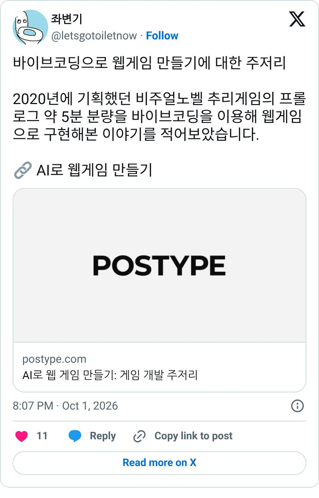

01
6년 묵힌 추리게임 기획 '메멘토 코드;' 프롤로그를 클로드로 웹게임화
X · @letsgotoiletnow · 좌변기 · 글 2026-10-01
AI 도구 · Claude (무료 플랜), 직접 그린 일러스트
2020년부터 기획해 온 다수결 데스게임 추리게임 《메멘토 코드;》의 프롤로그 약 5분 분량을 Claude 무료 플랜으로 웹게임으로 만들었습니다. 대사와 연출을 데이터 테이블로 빼서 본인이 표를 고치고 AI가 반영하게 했습니다. UI는 AI와 현업 개발자 피드백으로 다듬었고, 배경과 캐릭터 일러스트는 직접 그렸습니다.
참고할 점 대사와 연출을 코드가 아닌 데이터 테이블로 분리하게 하면 기획자가 AI와 기획자-개발자 방식으로 빠르게 반복할 수 있습니다.
